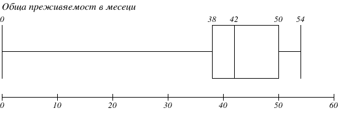

Тест на хипотеза. Т-тест
Важни правила от дескриптивната и инферентна статистика
- За да се опише статистически една извадка е необходимо да:
- Променливите биват количествени и качествени:
- Когато количествени променливи са нормално разпределение 5, те се описват със средната аритметична \(\bar{x}\) и стандартното отклонение \({SD}\);
- При асиметрично разпределение (ляво или дясно изтеглено) по-подходящи са медианата \({Me}\) и интерквартилния размах \({IQR}\);
- Стандартното отклонение:
- Е измерител на средното ниво на вариабилност около средната аритметична;
- Може да бъде “0” при наблюдения с едни и същи стойности;
- Намалява с увеличение на наблюденията в извадката;
- Е високо, ако наблюдаваните стойности са много разпръснати около средната аритметична;
- Интерквартилния размах:
- Представлява нивото на вариабилност спрямо медианата.
- Се представя чрез диаграмата boxplot.
- Тя представлява кутия с “мустаци” - двете и страни съответстват на стойностите на първия Q1 и третия Q3 квартил, а средната линия, разделяща кутията, е медианата.
- Интерквартилният размах е разликата между стойностите на третия и първия квартил;
- “Мустаците” от двете страни на кутията определят вида на разпределението 6;
- Тя представлява кутия с “мустаци” - двете и страни съответстват на стойностите на първия Q1 и третия Q3 квартил, а средната линия, разделяща кутията, е медианата.
- В основа на резултатите от извадката (статистики) се изгражда интервал от стойности, в който с определена степен на сигурност, се намира параметърът за генералната съвкупност 7.
- Първата стъпка при построяването на доверителния интервал е определянето на стандартната грешка
- Тя зависи от броя наблюдения - увеличаването на броя води до намалява стандартната грешка;
- Тя зависи от стандартното отклонение - увеличаването на стандартното отклонение води до увеличаване на стандартната грешка;
- Широчината на доверителния интервал зависи от стандартната грешка и от избраното ниво на сигурност 8;
- При равни други условия, ако увеличим степента на сигурност от 90 до 99% широчината на интервала нараства;
- При високи стойности на стандартна грешка интервалът на доверителност също е широк;
- Първата стъпка при построяването на доверителния интервал е определянето на стандартната грешка
Тест на хипотези
Освен да опишем една извадка и да направим предположение за това каква е стойността на показателя в генералната съвкупност, статистиката се използва и за тестване на хипотези. Хипотезата е научно предположение за наличие на връзка между две или повече изследвани променливи. Хипотезите биват два вида - нулева и алтернативна.
При тестването на хипотези се определя колко е вероятно една взаимовръзка да бъде наблюдавана в резултат на случайност. Тази вероятност се бележи със символа \(p\). В класическата теория на статистиката се “тества” единствено нулевата хипотеза - приемаме, че тя е вярна, ако вероятността \(p\) е равна или по-голяма от 5% (0.05). От друга страна, ако \(p\) е под 5% (0.05) отхвърляме нулевата хипотеза и приемаме за вярна алтернативната 9.
Нулевата хипотеза \({H_0}\) е винаги отричащо твърдение за наличието на връзка между две или повече явления.\({^a}\)
Алтернативната хипотеза \({H_1}\) е твърдение противоположно на нулевата хипотеза. \({^b}\).
\({^a}\) \({H_0}\) е твърдението “Новият медикамент за хипертония не намалява стойностите на кръвното налягане, ако има подобно намаляване, то е наблюдавано случайно”
\({^b}\) \({H_1}\) е твърдението “Новият медикамент за хипертония намалява стойностите на кръвното налагане, това намаление е не в резултат на случайност”.
Тестваме ново лекарство за хипертония, като избираме две групи пациенти (извадки). Случайно избираме едната от тях, която лекуваме с новия медикамент, а на другата прилагаме плацебо таблетка, която не съдържа лечебно вещество. В края на изследването сравняваме средните стойности на кръвното налягане в двете групи пациенти. Нека приемем, че в експерименталната група кръвното налягане е средно 10 mmHg по-ниско от това в плацебо групата.
\({H_0}\) Нулевата хипотеза гласи “Не съществува връзка между приема на медикамента и стойността на кръвното налягане. Тази разлика от 10 mmHg е в следствие на случайността.”
\({H_1}\) Алтернативната хипотеза е противоположна “Има връзка между медикамента и понижаването на кръвното налягане. Тази разлика от 10 mmHg НЕ е в резултат на случайността.
Чрез статистически методи определяме колко е вероятно да получим подобна разлика случайно (\(p\)). Ако приемем, че в нашия пример \(p\) е 0.09 (9%), това означава, че ако новият медикамент действително не работи и повторим експеримента с други пациенти 100 пъти, такава или по-голяма разлика в кръвното налягане ще се наблюдава случайно в 9 от тези 100 опита. В случая това е “прекалено много” за да отхвърлим нулевата хипотеза. Обратно, ако сме изчислили, че \(p\) е по-малко от 0.05 (9%), това означава, че ако в действителност новият медикамент не работи и повторим експеримента с други пациенти 100 пъти, такава или по-голяма разлика в кръвното налягане ще се наблюдава случайно в по-малко от 5 в тези 100 опита. В случая това е достатъчно за да отхвърлим нулевата хипотеза и приемем алтернативната.
Видове грешки
Определянето на “вероятността за случайност” \(p\) зависи от множество фактори. Понякога е възможно да направим “погрешен” статистически извод, следствие на това, че сме наблюдавали много малък брой участници или сме ги подбрали по неправилен начин. При изграждане на извод в основа на тестването на хипотези са възможни два вида грешки 10 представени в Таблица 1
| \({H_0}\) е вярна | \({H_0}\) е грешна | |
|---|---|---|
| Отхвърляме \({H_0}\) | Грешка от първи род \({\alpha}\) | Правилно решение |
| Приемаме \({H_0}\) | Правилно решение | Грешка от втори род \({\beta}\) |
- Грешката от първи род \({\alpha}\) е от особено значение на статистическия анализ. При нея се приемат за “научни открития” явления, които в действителност не са верни. Граничната стойност на вероятността \(p\), под която отхвърляме нулевата хипотеза, представлява допустимото ниво на \({\alpha}\) грешката.
- Грешка от втори род \({\beta}\) е свързана основно с използвания статистически тест и броя на включените в изследването наблюдения. В основа на тази грешка не сме способни да докажем действително съществуващи връзки.
Мощност
Мощността е характеристика на статистическия тест и представлява възможността докажем връзка между две явления, когато действително такава съществува. Мощността е равна на \(1 - {\beta}\) и зависи от:
- Риска за грешка от 1-ви род \({\alpha}\). Увеличаването на допустимото ниво на риск за грешка от 1-ви род \({\alpha}\) от 0.5 до 0.1, намалява грешката от втори род \({\beta}\) и увеличава мощността.
- Размер на “терапевтичния ефект”. При много силни взаимовръзки в статистическите явления, тестът има по-голяма мощност 11.
- Хомогенността на групата. Колкото по-хомогенно е представена статистическата връзка в изследваните индивиди, толкова по-голяма е мощността на теста.
- Обемът на извадките. Високия брой наблюдения в извадката води до по-малко стандартно отклонение и стандартна грешка. От своя страна по-малката стандартна грешка повишава мощността на статистическия тест.
Видове статистически тестове
Статистическите тестове са математическите “инструменти”, с които се определя числено вероятността за случайно установяване на взаимовръзка между две или повече променливи. Изборът на тест зависи от:
В Таблица 2 и Таблица 3 са представени основните статистически тестове спрямо разгледаните по-горе признаци.
| Групи | Параметричен тест (количествени) | Непараметричен тест (количествени) | Непараметричен тест (качествени) |
|---|---|---|---|
| 1 | Едногрупов t тест | Wilcoxon тест | \({\chi}^2\) за съответствие |
| 2 | t тест | Mann Whitney U тест | \({\chi}^2\) тест |
| ≥ 3 | ANOVA | Kruskal Wallis H тест | \({\chi}^2\) тест |
| Групи | Параметричен тест (количествени) | Непараметричен тест (количествени) | Непараметричен тест (качествени) |
|---|---|---|---|
| 2 | RM - t test | Wilcoxon тест | McNemar тест |
| ≥ 3 | RM-ANOVA | Friedman тест | ТMcNemar тест |
Статистическа и клинична значимост
Потвърждаването на статистически значима връзка между две променливи не означава, че тя е и клинично значима. Ако приемем, че нов медикамент понижава стойностите на кръвното налягане статистически значимо, но с минимален ефект от 1 mmHg не можем да твърдим, че той приложим за болшинството пациенти страдащи от това заболяване.
Статистическата значимост представлява математическа оценка на вероятността да получим подобен или по-висок резултат в следствие на случайност.
Клинична значимост представлява оценка на ефектът на статистическата взаимовръзка в реалната клинична практика \({^a}\).
\({^a}\) Нов медикамент, може да е “статистически значим” като редуцира кръвното с 2 mmHg, но това не е клинично значим ефект нито пациента, нито вие като лекар.
T-тест
Т тестът установява наличието на разлика в една нормално разпределена количествена величина в две независими една от други групи.
Условия за използване на Т тест 15
- Количествената величина в двете изследвани извадки е нормално разпределена и има приблизително еднаква вариабилност (стандартно отклонение);
- Включени са поне 30 единици във всяка от двете групи;
- Извадките са представителни по отношение на генералната съвкупност.
Т-тест за количествени признаци
Т- тестът се прилага при следването на следните 7 стъпки:
- Дефиниране на нулева хипотеза \({H_0}\) и алтернативна хипотеза \({H_1}\);
- Определяне на ниво на значимост \({\alpha}\);
- Определянето на средната аритметична и стандартното отклонение в двете групи;
- Изчисляване на стандартната грешка;
- Изчисляване на t статистиката;
- Определяне на p стойността;
- Статистическо заключение.
За да представим стъпките нека разгледаме следния пример. Проведено е проучване с цел да установим дали нов медикамент - бета блокер е ефективен за намаляване на сърдечната честотата 16. Изследователката компанията е извършила първоначален експеримент с 80 случайно избрани пациенти - 40 са получили новия медикамент, а останалите 40 плацебо таблетка. След 4 месеца са измерени стойностите на сърдечната честота на всеки един участник. Данните са представени в Таблица 4 и в Таблица 5
| Експериментална група |
|---|
| 58, 58, 58, 59, 60, 60, 60, 60, 61, 61, 62, 62, 63, 64, 64, 64, 64, 65, 65, 65, 65, 66, 66, 66, 66, 67, 67, 67, 68, 68, 68, 69, 69, 70, 70, 70, 71, 71, 71, 72 |
| Контролна група |
|---|
| 68, 68, 70, 71, 71, 72, 72, 74, 74, 75, 75, 76, 76, 78, 78, 79, 80, 80, 81, 82, 82, 82, 83, 84, 84, 85, 85, 86, 88, 89, 89, 90, 91, 92, 93, 93, 93, 94, 94, 96 |
Дефиниране на нулева хипотеза \({H_0}\) и алтернативна хипотеза \({H_1}\)
Определяне на риска за грешка \({\alpha}\)
Както посочихме по-рано \({\alpha}\) в медицинските изследвания е 0.05 (5%). С други думи можем да “отхвърлим” нулевата хипотеза, само ако вероятността да наблюдаваме явлението в резултат на случайност е под риска за грешка от 5 %.
Определянето на средната аритметична и стандартното отклонение в двете групи 19
От Фигура 1, както и от Таблица 6 можем да добием представа за това как е разпределена величина пулс в двете изследвани групи. Пациентите лекувани с бета блокер се характеризират с среден пулс от 65 уд/мин и стандартно отклонение от 4,08 уд/мин, докато при пациентите приемащи плацебо средният пулс е близо 82 уд/мин, а стандартното отклонение 8.16 уд/мин. Наблюдаваната разликата между средните величини в двете групи е почти 17 уд/мин.
| характертистика | Бета блокер | Плацебо |
|---|---|---|
| Средна аритметична | 65.00 | 81.83 |
| SD | 4.08 | 8.16 |
| Медиана | 65.00 | 82.00 |
| IQR | 6.25 | 14.00 |
Изчисляване на t-статистиката
За да достигнем до извод колко е вероятно тази разликата в пулса да е случайна, трябва да изчислим стойността \(t\) като използваме формула
\[ t = \frac{|{\bar{x}_1}-{\bar{x}_2}|}{\sqrt{{{SE_{m_1}}^2} + {SE_{m_2}}^2}} \]
Където:
- \({\bar{x}_1}\) е средната аритметична на пулса в групата с бета блокер;
- \({\bar{x}_2}\) е средната аритметична на пулса в контролната група;
- \({SE_{m{_1}}}\) е стандартната грешка на средната аритметична в групата с бета блокер;
- \({SE_{m{_2}}}\) е стандартната грешка на средната аритметична в контролната група;
- \({|{\bar{x}_1}-{\bar{x}_2}|}\) е абсолютната стойност на разликата между средните аритметични;
- \({\sqrt{{{SE_{m_1}}^2} + {SE_{m_2}}^2}}\) е корен квадратен от сумата на квадратите на стандартните грешки на средните аритметични;
- \({t}\) е стойността на t-статистиката.
Изчисляване на стандартните грешки
За да изчислим стандартната грешка за всяка от групите прилагаме вече позната формула от упражнение 2
За групата с бета блокер: \[ {SE_{m{_1}}}=\frac{SD_1}{\sqrt{n_1}} \]
\[ {SE_{m{_1}}} =\frac{4.08}{\sqrt{40}}=\frac{4.08}{6.33}= 0.65\]
За групата с плацебо 20 \[ {SE_{m{_2}}}=\frac{SD_2}{\sqrt{n_2}} \]
\[ {SE_{m{_2}}} =\frac{8.16}{\sqrt{40}}=\frac{8.16}{6.33}= 1.29\]
Приложение на формулата за t-стойността
След като сме изчислили стандартните грешки на средните аритметични за двете групи заместваме във формулата:
\[ t = \frac{|{\bar{x}_1}-{\bar{x}_2}|}{\sqrt{{{SE_{m_1}}^2} + {SE_{m_2}}^2}} \]
\[ {t} = \frac{|65.00-81.83|}{\sqrt{{0.65^2} + {1.29}^2}} \]
\[ {t} = \frac{|-16.83|}{\sqrt{0.43 + 1.66}} = \frac{16.83}{\sqrt{2.09}} = \frac{16.83}{1.45}=11.6 \]
Изчисляване на p стойността
За да определим вероятността разликата в двете групи да бъде случайна - \(p\) използваме изчислената \(t\) стойност. Не са необходими допълнителни формули, понеже не е необходима точната числена стойност на \(p\). В тази стъпка само определяме отношението на вероятността \(p\) спрямо зададеното нивото на значимост (риск от грешка 1-ви род) \({\alpha}\). За целта използваме Таблица 7
| df | p = 0.1 | p= 0.05 | p = 0.01 |
|---|---|---|---|
| 30 | t= 1.645 | t = 1.960 | t = 2.576 |
В таблицата:
- \({df}\) е степента на свобода. Тя зависи от броя единици на наблюдения. Познаването на този индикатор не е необходимо за настоящият анализ - по правило се използват само стойностите отговарящи на \({df}>30\);
- Всяка една колона представя гранично ниво на риска за грешка от първи род \({\alpha}\). В медицината използваме лимитираща стойност от \({\alpha}<0.05\), затова се интересуваме от стойностите във втората колона;
- По редове са представени стойностите на \(t\) критерия, отговорящи на съответните нива на значимост;
- Ако получим \({t} = 1.645\) вероятността за случайност е 10% (0.1). При \({t} = 1.96\) вероятността за случайност е 5% (0.1), а при \({t} = 2.576\) вероятността за случайност е 1% (0.01).
В нашия пример стойността \({t} = 11.6\). Въпреки, че тя липсва в Таблица 7 можем да заключим, че вероятността за случайност е под 1% (0.01).
Статистически извод
Сега е момента да направим финалното заключение за нашето проучване.
- Разликата между двете групи e 16.83, а t критерия е 11.6.
- В таблицата установения t критерии е по-голям от 2.576, следователно и вероятността да наблюдаваме подобна разлика в двете групи е по-малка от от 0.01.
- Определената вероятност е под риска за грешка - p < \({\alpha}\) <0.05, което означава че отхвърляме \({H_0}\) и приемаме \({H_1}\) - групата лекувана с бета блокер има значително по-ниски стойности на сърдечния пулс спрямо пациентите лекувани с плацебо.
Колкото е по-висока стойността на \({t}\) критерия, толкова по-малко вероятно е да бъде наблюдаваме случайно. При стойност на \({t}\) над 1,96, вероятността за случайност \(p < 0.05\), което ни позволява да отхвърлям нулевата хипотеза
Важни зависимости
При равни други условия:
- По-голямата абсолютната разлика в средните аритметични води до по-голяма стойност на t критерия и до по-малка вероятност за случайност;
- По-високата хомогенност в групите води до по-малко стандартно отклонение, което е причина за по-малка стандартна грешка и по-високи стойности на t критерия;
- Увеличаването на броя наблюдения в извадката води до по-малко стандартно отклонение и по-малка стандартната грешка, тоест до по-високи стойности на t критерия.
Т-тест за качествени признаци
T тестът може да се използва и за качествени признаци, когато искаме да сравним два относителни дяла. За целта се използва формулата:
\[ t = \frac{|{\hat{p}_1}-{\hat{p}_2}|}{\sqrt{{{SE_{p_1}}^2} + {SE_{p_2}}^2}} \]
Където:
- \({\hat{p}_1}\) е относителният дял на група 1;
- \({\hat{p}_2}\) е относителният дял на група 2;
- \({SE_{p_1}}\) е стандартната грешка на относителния дял в група 1;
- \({SE_{p_2}}\) е стандартната грешка на относителния дял в група 2;
- \({|{\hat{p}_1}-{\hat{p}_2}|}\) е абсолютната стойност на разликата между относителните дялове;
- \({\sqrt{{{SE_{p_1}}^2} + {SE_{p_2}}^2}}\) е корен квадратен от сумата на квадратите на стандартните грешки на относителните дялове.
За да приложим формулата нека представим следния пример. Проследили сме пациентите ползващи бета блокер или плацебо за период от 5 години. Изследователите са записали броя на починалите от всяка една от двете групи.
Общо са починали 38 пациенти. В групата с бета блокер са починали 6-ма (15%), а в групата с плацебо 32-ма (80%). В Фигура 2 прави впечатление, че пропорцията на починалите сред приемащите новото лекарство е в пъти по-малка от тази на контролната група.
За да установим дали тази разлика е в резултат на случайност, отново използваме t-теста. В този пример обаче e необходима неговата модификация - вместо средните аритметични се използват относителните дялове (процент).
Дефиниране на нулева хипотеза \({H_0}\) и алтернативна хипотеза \({H_1}\)
- Нулева хипотеза
-
Няма разлика между съотношението на починалите в двете групи пациенти. Дори и да наблюдаваме такава, тя е резултат на случайност и не съществува в генералната съвкупност.
- Алтернативна хипотеза
-
Има разлика между относителните дялове на починалите пациенти в двете групи. Тази разлика не е в резултат на случайност.
Определяне на риска за грешка (ниво на значимост)
Отново използваме нивото \({\alpha}\) под 0,05
Определяне на стандартната грешка
Използваме познатата от упражнение 2 формула: \[{SE_p}=\sqrt{\frac{\hat{p}\cdot{(100-{\hat{p})}}}{n}}\]
За пациентите ползващи бета блокер: \[{SE_p{_1}}=\sqrt{\frac{\hat{p_1}\cdot{(100-{\hat{p_1})}}}{n}}=\sqrt{\frac{15\cdot{(100-{15)}}}{40}}=\sqrt{\frac{15\cdot{85}}{40}}=\sqrt{\frac{1275}{40}}=\sqrt{31,88}=5,6\]
За пациентите ползващи плацебо:
\[{SE_p{_2}}=\sqrt{\frac{\hat{p_2}\cdot{(100-{\hat{p_2})}}}{n}}=\sqrt{\frac{80\cdot{(100-{80)}}}{40}}=\sqrt{\frac{80\cdot{20}}{40}}=\sqrt{\frac{1600}{40}}=\sqrt{40}=6,32\]
Изчисляване на t-статистиката
Прилагаме формулата:
\[{t} = \frac{|\hat{p_1}-\hat{p_2}|}{\sqrt{{SE_p{_1}^2} +{SE_p{_2}^2}}}\]
\[{t} = \frac{|15-80|}{\sqrt{{5.6}^2+{6.32}^2}}=\frac{|-65|}{\sqrt{31.36+40.45}}=\frac{65}{\sqrt{31.36+40.45}}=\frac{65}{\sqrt{71.81}}=\frac{65}{8.47}=7.6\]
Определяме p стойността
След като получим стойността на t критерия проверяваме в коя посока се намира вероятността \(p\) в Таблица 8
| df | p = 0.1 | p= 0.05 | p = 0.01 |
|---|---|---|---|
| 30 | t= 1.645 | t = 1.960 | t = 2.576 |
T критерият е по-висок от 2.576 (тоест е надясно от най-високата стойност), което означава, че вероятността \(p\) е по-малка от 0,01.
Заключение
При t = 7,6 вероятността за случайност \(p\) е по-малка от риска за грешка \({\alpha}\) < 0.05. Следователно, отхвърляме \({H_0}\) и приемаме \({H_1}\) - съществува статистически значима разлика в относителните дялове на починалите в двете извадки.
Задачи и тестове за самоподготовка
Задачи
Задача 1
По случаен начин са подбрани две извадки с обем съответно n1 = 248 и n2 = 140 индивиди с кардиологични проблеми. В таблицата по-долу е регистриран пулсът на пациентите. Изчислете границите на 95% доверителен интервал за средните величини на популацията за двете извадки. Докажете дали средната аритметична е статистически различна спрямо групата пациенти, използвайки Т-тест.
| Група 1 - пулс | Група 1 - брой | Група 2 - пулс | Група 2 - брой |
|---|---|---|---|
| 60 | 4 | 80 | 10 |
| 65 | 18 | 85 | 15 |
| 70 | 25 | 90 | 25 |
| 75 | 30 | 95 | 30 |
| 80 | 50 | 100 | 28 |
| 85 | 48 | 105 | 16 |
| 90 | 36 | 120 | 2 |
| 95 | 28 | 125 | 8 |
| 100 | 9 | 130 | 6 |
| Общо | 248 | Общо | 140 |
Задача 2
Да се определи съществено ли е различието във виталния капацитет при индивиди от мъжки пол на 19 годишна възраст в две независими извадки с еднакъв брой случаи. В едната извадка са включени баскетболисти, а в другата младежи, трениращи плувен спорт. Да се приложи t тестът, като необходимите статистически параметри - средна аритметична и стандартно отклонение да се изчислят както при групирани данни.
Баскетболисти Витален капацитет |
Честота (f) | Плувци Витален капацитет |
Честота (f) |
|---|---|---|---|
| 2601-2800 | 12 | 3401-3600 | 13 |
| 2801-3000 | 21 | 3601-3800 | 26 |
| 3001-3200 | 35 | 3801-4000 | 35 |
| 3201-3400 | 62 | 4001-4200 | 58 |
| 3401-3600 | 33 | 4201-4400 | 30 |
| 3601-3800 | 19 | 4401-4600 | 20 |
| 3801-4000 | 15 | 4601-4800 | 15 |
| общо: | 197 | общо: | 197 |
Тестове
Задача 1
В рамките на клинично проучване пациенти със стомашен аденокарцином са разделени на 3 групи в зависимост от приложената терапия. Изследователският екип има за цел да сравни 4-седмичните изменения в абсолютния туморен размер спрямо изходните стойности, като тази величина не е нормално разпределена. Какъв тест за проверка на хипотеза следва да бъде приложен?
- H-тест на Kruskal–Wallis
- ANOVA
- Тест на Friedman за свързани извадки
- ANOVA с повторни измервания
Задача 2
В рамките на проспективно наблюдение на различни диетични режими за намаляване на теглото ученици със затлъстяване са разделени на 2 групи. 95% CI за средното намаление на теглото при 3-месечна диета А е между 4.5 и 7.2 кг. 95% CI за средното намаление на теглото при 3-месечна диета Б е между 2.2 и 4.2 кг. Какъв извод може да се направи?
- Няма разлика в ефективността на двете диети.
- Има статистически значима разлика в ефективността на двете диети.
- Диета А е статистически значимо по-ефективна от диета Б.
- Диета Б е статистически значимо по-ефективна от диета А.
Задача 3
В рамките на клинично проучване пациенти с множествена склероза са разделени на 2 групи в зависимост от приложената терапия. 95% CI за честотата на рецидиви при терапия А между 21 и 38%. 95% CI за честотата на рецидиви при терапия Б между 34 и 48%. Какъв извод може да се направи?
- Няма разлика в ефективността на двете терапии.
- Има статистически значима разлика в ефективността на двете терапии.
- Терапия А е статистически значимо по-ефективна от терапия Б.
- Терапия Б е статистически значимо по-ефективна от терапия А.
Задача 4
При равни други условия, ако намалим нивото на значимост от α = 0.05 на α = 0.01
- Вероятността за грешка от I род ще нарастне, докато вероятността за грешка от II род ще намалее.
- Вероятността за грешка от II род ще нарастне, докато вероятността за грешка от I род ще намалее.
- Вероятността за грешки от I и от II род ще нарастне.
- Вероятността за грешки от I и от II род ще намалее.
Задача 5
В проспективно проучване на пациенти с миастения гравис тежки миастенни кризи са наблюдавани при 23 (30.7%) от общо 75 пациенти, 95% CI за Р (20.1%; 40.3%). Кое от следните твърдения е вярно?
- В популацията от пациенти с миастения гравис честотата на тежки миастенни кризи най-вероятно е по-голяма от 30.7%.
- Произволен пациент с миастения гравис има 30.7% шанс да развие тежки миастенни кризи.
- Има 95% вероятност честотата на тежки миастенни кризи в изследваната извадка да бъде между 20.1% и 40.3%.
- В популацията от пациенти с миастения гравис честотата на тежки миастенни кризи е малко вероятно да бъде по-малка от 20.1%.
Задача 6
В рамките на клинично проучване пациенти с белодробен карцином са разделени на 2 групи в зависимост от приложената терапия. Резултатите са анализирани с помощта на t-тест за сравнение на 2 независими извадки. Пациентите, лекувани с експериментална терапия, преживяват средно 10.1 месеца, докато лекуваните с химиотерапия преживяват средно 8.7 месеца (p = 0.08). Кое от следните твърдения е вярно?
- Приемаме нулевата хипотеза, че има статистически значима разлика в средната преживяемост при двата вида терапия.
- t-тестът за сравнение на 2 независими извадки е подходящ за сравнение на средната преживямост, тъй като в случая средните стойности за този показател са приблизително равни в двете групи.
- Тъй като резултатът не е статистически значим, може да преминем към анализ на данните с t-тест за две свързани извадки.
- Подходяща алтернативна хипотеза в случая е, че двете групи пациенти имат различна преживяемост в зависимост от вида на лечението.
Задача 7
В проучване на родилки с множествена склероза средното тегло на новородените е 3 100 г при майките, които са в ремисия от повече от 1 година, и 2 850 г при майките, които са в ремисия по-малко от 1 година (p = 0.06). Резултатите са анализирани с помощта на t-тест за сравнение на 2 независими извадки. Кое от следните твърдения е вярно?
- Полученият резултат е статистически значим при α = 0.05, което означава, че нулевата хипотеза може да бъде отхвърлена.
- Тест на McNemar също може да се използва за тест на хипотеза в този случай.
- Теглото на тези новородени най-вероятно не е нормално разпределена величина.
- Нулевата хипотеза гласи в случая, че средното тегло на новородените е еднакво за двете групи родилки.
Задача 8
Кое от следните твърдения е вярно?
- Случайната грешка се дължи на обстоятелството, че се наблюдава част от генералната съвкупност.
- Систематичната грешка се дължи на получена недостоверна информация.
- Грешка на оценката се получава при извадкови изследвания и включва 2 вида грешки – стохастична и нестохастична.
- Всички отговори са верни.
Задача 9
Кое от следните твърдения е вярно?
- t-тест за 2 независими извадки е приложим единствено, когато изследваната променливата е нормално разпределена.
- t-тест за 2 независими извадки е подходящ, когато искаме да сравним 2 променливи, всяка от които се измерва еднократно за всеки индивид от извадката.
- t-тест за 2 независими извадки е подходящ, когато искаме да сравним 1 променлива, измерена за индивиди преди началото на клинично проучване, с референта стойност от терапевтичен стандарт.
- Всички отговори са грешни.
Задача 10
При равни други условия, най-малък необходим брой единици на наблюдение ще бъде необходим при: a) Разнородна популация и голям по размер клиничен ефект. b) Еднородна популация и голям по размер клиничен ефект. c) Разнородна популация и малък по размер клиничен ефект. d) Еднородна популация и малък по размер клиничен ефект.
Отворени въпроси
Задача 1
Каква е стойността на интерквартилния размах на променливата „обща преживяемост в месеци“ (представена на боксплот диаграмата по-долу)? Какво по вид е разпределението на тази променлива? Има ли и каква е стойността на най-екстремните аутлайъри в този случай?

Задача 2
Може ли стандартното отклонение да бъде равно на нула? Обяснете защо.
Задача 3
Обемът на извадката оказва ли влияние върху вероятността за грешки от II? А върху вероятността за грешки от I род? Обяснете защо.
Задача 4
Мощността на научноизследователския дизайн при проверка на хипотеза зависи от 4 основни фактора. Дайте пример за комбинация от тях, която ще постигне дизайн с възможно най-голяма мощност.
Задача 5
Извадка от 2 000 новородени е включена в проспективно изследване. Средното тегло на новородените при раждане е 3 500 г със стандартно отклонение 400 г. Теглото при раждане е нормално разпределена величина. Колко от включените за наблюдение новородени имат тегло, което е по-голямо от 4 300 г или по-малко от 3 100 г?
Задача 6
Проучване на нивото на физическа активност (измервано като брой часове тренировка седмично) при пушачи и непушачи достига до t = 2,96. Какво заключение може да се направи въз основа на този резултат?
Бележки
Показатели за централна тенденция са средната аритметична, медианата или относителен дял↩︎
Показатели за разсейване са стандартното отклонение и интерквартилния размах↩︎
Като пропорционална или интервална;↩︎
Като номинална и ординална;↩︎
Нормалното разпределение е симетрично, камбановидно.↩︎
Ако мустаците са равни - разпределението е симетрично, ако десния мустак е по-дълъг от левия - разпределението е дясно изтеглено, ако левият мустак е по-дълъг от десния - разпределението е ляво изтеглено.↩︎
Пример за “статистика” е средната аритметична за ръста в една извадка, параметър е средната аритметична за ръста в генералната съвкупност.↩︎
В медицината най-често се използва \(95\%{CI}\)↩︎
Някой изследователи не приемат зададеното ниво за \(p\) от 0.05 (5%). Алтернативно други предложени гранични стойности за отхвърляне на нулевата хипотеза са \(p\) < 0,01 (1%) или \(p\) < 0.1 (10 %).↩︎
Двата вида грешки са взаимосвързани (но не пропорционално) - ако намалим вероятността за грешка от първи род, като променим гранична стойността на \(p\) от 0.5 на 0.1, ще се увеличим възможността за грешка от втори род. Обратно, ако приемем, че отхвърляме нулевата хипотеза при ниво от 0.1, вместо 0.5 - увеличаваме възможността за грешка от първи род \({\alpha}\), но намаляваме възможността за грешка от втори \({\beta}\).↩︎
В ситуация, в която “новият” медикамент действително е много силен и драстично намаля кръвното налягане, разликата между с плацебо групата ще е голяма, а вероятността да сме я наблюдавали случайно - ниска.↩︎
Важно е да определим типа на променливите за които предполагаме връзка - възможни са всички комбинации между качествени и/или количествени променливи. Ако изследване връзка с участие на количествени променливи, които са нормално разпределени използваме параметрични тестове, за всички останали - непараметрични.↩︎
Възможно е да тестваме резултатите получени от една единствена група спрямо предполагаема от литературата стойност. Повечето изследвания сравняват две групи - експериментална и контролна, а други включват допълнителни множество изследвани групи.↩︎
Трябва да се определи дали изследваните групи са “независими” - тоест такива, които се изследват еднократно или “зависими” - при които провеждаме изследване на едни и същи единици в два или повече момента във времето.↩︎
T тестът се използва основно за количествени признаци, но е разработен и модифициран вариант за качествени променливи измерени чрез относителен дял.↩︎
При пациенти със сърдечно-съдови заболявания, пулс около 60 е оптимален, защото позволява на сърцето да си “почива” по-дълго във фазата на диастола, по време на която се храни с кръв от коронарните артерии.↩︎
Това е тестваната хипотеза. Тя предполага, че независимо в коя група е попаднал пациента съществена разлика в пулса не се наблюдава. Дори и да има такава, това ще е в резултат на случайността (а не на медикамента).↩︎
Алтернативната хипотеза е противоположна на нулевата нулевата. Според нея разлика в стойностите на пулса има и причината за това е новия медикамент.↩︎
Формулите и методът за определяне на средната аритметична и стандартното отклонение са представени в упражнение 2.↩︎
Тук е момента да припомним, че плацебо групата има по-голяма грешка, поради факта, че групата е по-нехомогенна.↩︎